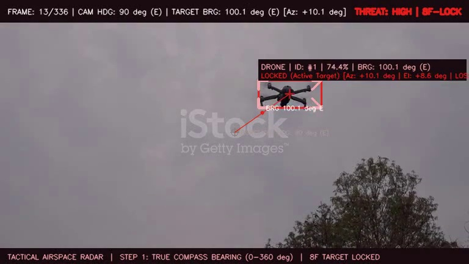

01
Answers from
your own knowledge.
RAG assistants for product documentation, internal SOPs, and support content. Relevant sources, clear citations, and a fallback when the answer isn't there.
Explore a knowledge assistant ↗INDEPENDENT AI ENGINEERING STUDIO
Computer vision, applied machine learning, and AI workflows—connected to the tools and decisions that matter to your business.
Your team's knowledge.
Right when it's needed.
01 / WHAT WE BUILD
One focused use case is a better beginning than AI everywhere. We help define it, build it, and evaluate how well it works.
RAG assistants for product documentation, internal SOPs, and support content. Relevant sources, clear citations, and a fallback when the answer isn't there.
Explore a knowledge assistant ↗Connect the steps between an incoming request and a useful draft. AI can classify, extract, and prepare; your team approves important actions.
Discuss an automation ↗Explore machine learning, deep learning, and computer vision for your data. Start with a feasibility review and agree on evaluation before a custom build.
Scope a custom project ↗SELECTED WORK
A closer look at the founder’s personal and open-source AI projects. View all 9 projects ↗

COMPUTER VISION
An urban monitoring prototype connecting visual detections, incident assessment, and emergency response coordination.
Explore project ↗
COMPUTER VISION
A computer vision pipeline for detecting and tracking drones, with a dashboard for telemetry and recorded evidence.
Explore project ↗
APPLIED ML
An end-to-end telecom churn application, from preprocessing and model training to a FastAPI prediction interface.
Explore project ↗THE REHVECTOR APPROACH
Good AI engineering connects data, evaluation, interfaces, and integration. We start with a bounded problem and build toward a result your team can inspect.
Meet the founder ↗03 / HOW WE WORK
A focused pilot gives you something to evaluate before committing to a wider rollout.
Understand the workflow, available data, and what a successful result would look like.
Define deliverables, exclusions, evaluation criteria, cost, and timeline before building.
Review a working pilot together. Test real scenarios, edge cases, and failure handling.
Receive the agreed source code, documentation, and a clear plan for hosting and maintenance.
A GOOD PLACE TO START